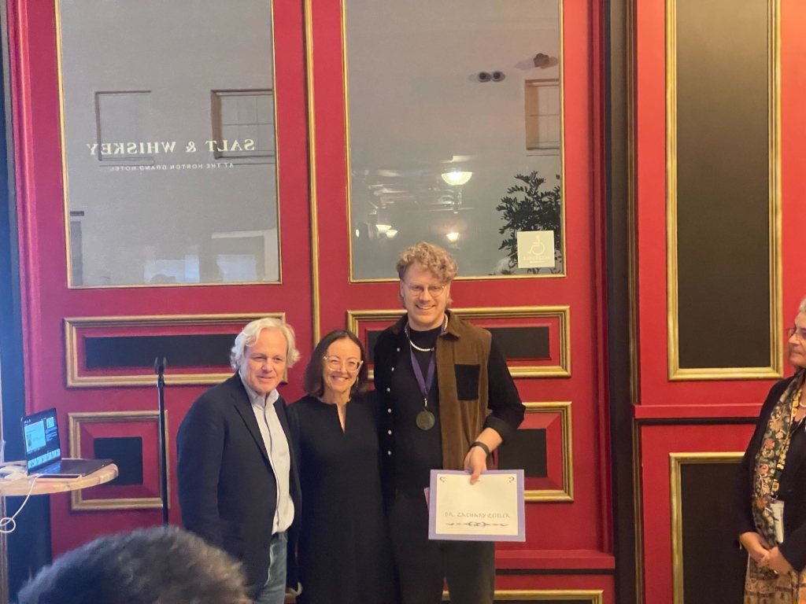

Consistent Hierarchies of Single-Neuron Timescales in Mice, Macaques, and Humans
Journal of Neuroscience. Investigates the hierarchical organization of neural timescales across species, revealing conserved principles of temporal processing.
Translating Neuroscience Insights into Intelligent Systems

I am a computational neuroscientist and data scientist specializing in decoding complex decision-making algorithms in biological systems. My research at Mount Sinai focuses on understanding how the brain processes information, represents uncertainty, and adapts behavior.
I build production-quality machine learning pipelines to analyze massive datasets (100+ GB/day), applying rigorous statistical methods to extract signal from noise. My expertise in analyzing complex, high-dimensional neural data translates directly to solving challenging problems in data science, machine learning, and quantitative research.
Daily Neural Data Processed
Experience in Scientific Computing
First-Author Publications
Development of end-to-end pipelines using PyTorch, scikit-learn, and RNNs. Expertise in building interpretable models to decode behavior and ensure robust performance.
Expertise in time-series analysis, Hidden Markov Models, and Bayesian inference. Applying rigorous statistical testing to extract reliable signals from noisy, high-dimensional data.
Processing high-dimensional biosensor data. Designing simulation frameworks and optimizing sensor-algorithm relationships for real-time decoding of complex systems.
Managing multi-site NIH projects and driving equity in STEM through leadership roles in Project SHORT, mentoring the next generation of scientists.
Journal of Neuroscience. Investigates the hierarchical organization of neural timescales across species, revealing conserved principles of temporal processing.
Current Biology. A comparative study demonstrating species-specific differences in the wiring of emotional brain circuits.
Neuron. Uncovers the precise anatomical rules governing how the amygdala communicates with decision-making centers in the primate brain.
Awarded for outstanding contributions to the understanding of the cerebral cortex. The Krieg Cortical Recognition Awards are presented to researchers at various career stages who have made significant discoveries in cortical structure and function.
Learn More →
I am currently exploring opportunities to apply my expertise in computational neuroscience and machine learning to solve real-world problems.